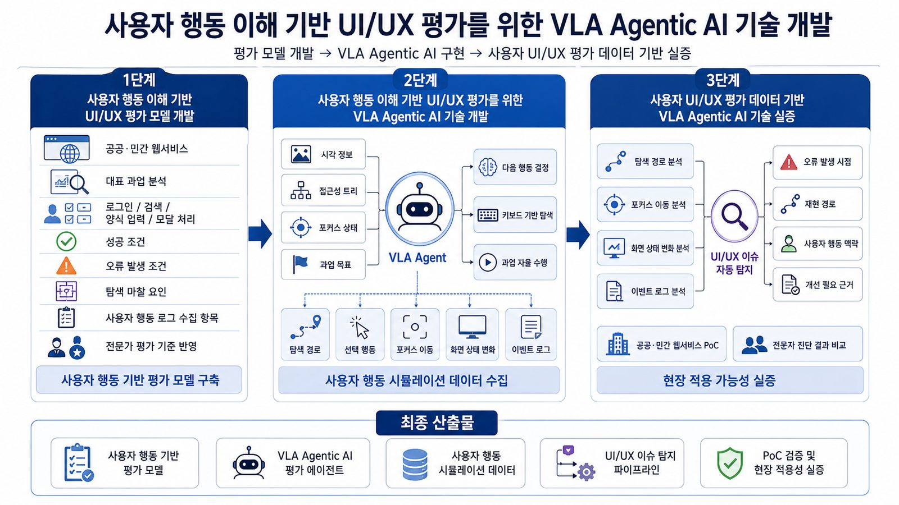

[Ongoing] 사용자 행동 기반 UI/UX 평가를 위한 Vision-Language-Action 에이전트 AI 기술 개발
연구책임자 / 2026.06.12 ~ 2026.12.31 / RISE 사업 (KRW 60 million)
사용자 행동 기반 UI/UX 평가를 위한 Vision-Language-Action 에이전트 AI 기술 개발 (Development of Vision-Language-Action Agentic AI for User Behavior-Driven UI/UX Evaluation)기간: 2026.06. ~ 2026.12.
Funding: RISE Program, SeoulTech (KRW 60 million)
본 연구는 실제 사용자의 행동(모션) 흐름 데이터를 이해하여 UI/UX를 자동으로 평가·진단하는 Vision-Language-Action(VLA) 에이전틱 AI 기술을 개발하는 것을 목표로 합니다. 이를 위해 ①사용자 행동 이해 기반 UI/UX 평가 모델 개발, ②사용자 행동 흐름 데이터 기반 UI/UX 평가를 수행하는 VLA 에이전틱 AI 기술 개발, ③전문가 검토를 결합한 Human-in-the-Loop 방식의 UI/UX 자동 평가·진단 도구 개발을 수행합니다. (주)에스앤씨랩과의 산학 협력을 통해 사용자 행동 기반의 정량적 UI/UX 평가 체계를 구축하고, 디지털 서비스의 사용성 진단·개선에 활용하고자 합니다.
English Summary:
This research aims to develop Vision-Language-Action (VLA) Agentic AI that understands real users' behavioral (motion) flow data to automatically evaluate and diagnose UI/UX. It pursues ① a UI/UX evaluation model grounded in user-behavior understanding, ② VLA Agentic AI that performs UI/UX evaluation from behavioral-flow data, and ③ a Human-in-the-Loop automated UI/UX evaluation and diagnosis tool that incorporates expert review. Through industry–academia collaboration with S&C Lab, the project establishes a quantitative, behavior-based UI/UX evaluation framework for diagnosing and improving the usability of digital services.
